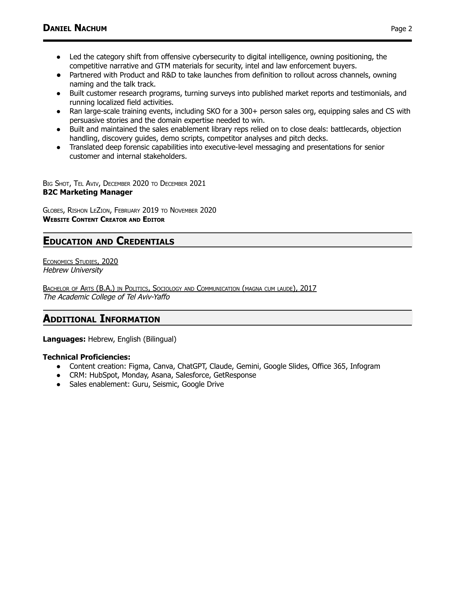

DANIEL NACHUM
Tel Aviv, Israel
+972-54-733-6304
oberman.daniel@gmail.com
GitHub | LinkedIn
(See recommendations on LinkedIn)
SUMMARY
Helping B2B companies show what makes their brands and products different, and empowering
thousands of marketers to tell theirs through the PMMiya community, with high-value content such as
podcasts and events.
PROFESSIONAL EXPERIENCE
DEMOSTACK, TEL AVIV, MARCH 2026 TO AUGUST 2026
FOUNDING PRODUCT MARKETING MANAGER
●
Led strategic deal engagements alongside reps and SEs, structuring each opportunity's business case
and tailoring the pitch, demo and rollout to the buyer's priorities.
●
Owned the go-to-market strategy for the company's agentic offering (enablement agents and MCP)
from problem definition to launch: positioning, naming, value-driven messaging, competitive
differentiation, PR and field training, setting Demostack apart in a crowded ecosystem.
●
Turned customer and prospect conversations (F2F, Zoom, Gong) into structured insights on unmet use
cases that shaped the roadmap, and into proof points such as case studies, testimonials and G2
reviews.
●
Built repeatable AI workflows that removed long-standing bottlenecks for design and PM, letting
account executives self-serve slides, UI mockups and one-pagers aligned with the current narrative.
●
Opened new commercial motions beyond outbound, such as:
○
Community and partner collaborations with ICP influencers, including a vibe coding hackathon
that generated 3 enterprise SQLs.
PMMIYA COMMUNITY, TEL AVIV, FEBRUARY 2026 TO PRESENT
●
Host a series of live stream events on how to champion product marketing in cybersecurity with
PMM leaders from the security ecosystem. Recent guest includes Eyal Webber-Zvik from Cato Networks.
●
Manage Israel's largest product marketing community, delivering high-quality content in the form of
meetups, podcasts and webinars packed with practical, ready-to-apply GTM insights.
WINDWARD MARITIME AI, TEL AVIV, MAY 2023 TO MAY 2025
PRODUCT MARKETING MANAGER
●
Owned the positioning and messaging of the company's AI story, contributing to its acquisition in 2025.
●
Launched 3 technical products, framing each around its commercial value for freight forwarders,
insurers, government and energy majors.
●
Acted as the internal expert on domain and platform, advising leadership on strategic initiatives, training
customer-facing teams and representing Windward in webinars, briefings and trade conferences.
●
Led go-to-market planning end to end, from segmenting audiences and use cases to upskilling the
business unit and tracking execution against measurable KPIs.
●
Enabled sales and CS with battlecards, objection handling, discovery guides, one-pagers, pitch slides
and FAQs, keeping them current as the product evolved.
●
Ran ongoing market and competitive analysis, interviewing clients and prospects and turning the
findings into recommendations that shaped the narrative, campaigns and roadmap.
CELLEBRITE (NASDAQ: CLBT), PETAH TIKVA, DECEMBER 2021 TO APRIL 2023
SENIOR MANAGER, PRODUCT MARKETING
DANIEL NACHUM
Page 2
●
Led the category shift from offensive cybersecurity to digital intelligence, owning positioning, the
competitive narrative and GTM materials for security, intel and law enforcement buyers.
●
Partnered with Product and R&D to take launches from definition to rollout across channels, owning
naming and the talk track.
●
Built customer research programs, turning surveys into published market reports and testimonials, and
running localized field activities.
●
Ran large-scale training events, including SKO for a 300+ person sales org, equipping sales and CS with
persuasive stories and the domain expertise needed to win.
●
Built and maintained the sales enablement library reps relied on to close deals: battlecards, objection
handling, discovery guides, demo scripts, competitor analyses and pitch decks.
●
Translated deep forensic capabilities into executive-level messaging and presentations for senior
customer and internal stakeholders.
BIG SHOT, TEL AVIV, DECEMBER 2020 TO DECEMBER 2021
B2C Marketing Manager
GLOBES, RISHON LEZION, FEBRUARY 2019 TO NOVEMBER 2020
WEBSITE CONTENT CREATOR AND EDITOR
EDUCATION AND CREDENTIALS
ECONOMICS STUDIES, 2020
Hebrew University
BACHELOR OF ARTS (B.A.) IN POLITICS, SOCIOLOGY AND COMMUNICATION (MAGNA CUM LAUDE), 2017
The Academic College of Tel Aviv-Yaffo
ADDITIONAL INFORMATION
Languages: Hebrew, English (Bilingual)
Technical Proficiencies:
●
Content creation: Figma, Canva, ChatGPT, Claude, Gemini, Google Slides, Office 365, Infogram
●
CRM: HubSpot, Monday, Asana, Salesforce, GetResponse
●
Sales enablement: Guru, Seismic, Google Drive